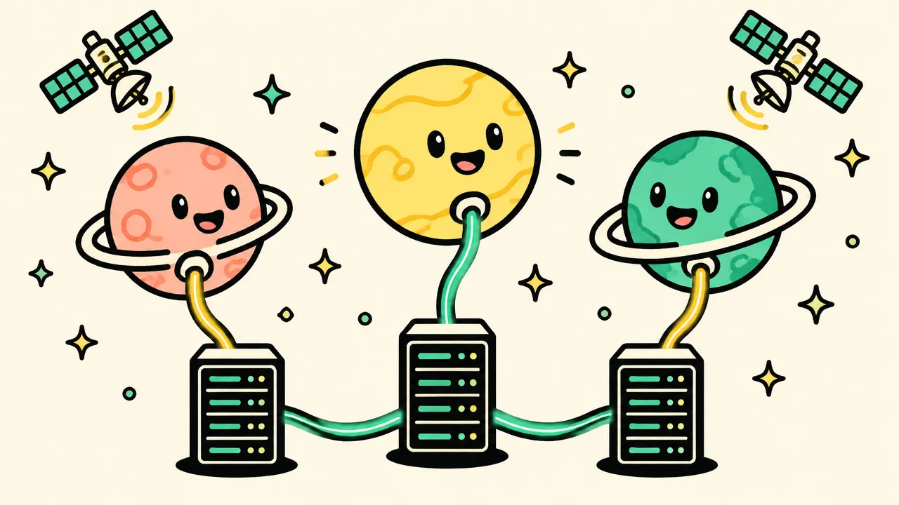

VoIP infrastructure for the agentic era with no vendor lock-in. Bring your own carriers, infrastructure and product, and adapt the platform wherever the project requires it.
Toyota ConnectedMMeucciRRoboHoldMMEMO GlobalMTNHHOTBBezeq InternationalGGilat Telecom
Toyota Connected
MMeucci
RRoboHold
MMEMO Global
MTN
HHOT
BBezeq International
GGilat Telecom
Why VoipAppz
Your voice platform, on your terms
No vendor lock-in
Choose your own infrastructure for each client — SIP termination, SIP-compatible phones and recording storage — with no middleman. Buy termination, SMS and storage directly from the providers you pick, and switch them whenever you want.
Decentralized architecture
Create separate, segmented environments between your clients for full analysis and utilization. It simplifies management and billing, supports clear security boundaries, and provides white-label options with customer subdomains, storage and portals.
Customization
Built on a documented REST API for integration with your in-house systems. VoipAppz provides custom development, upgrades and new features for the requirements agreed in each project.
Who uses VoipAppz
01
Telecom and service providers
Operate customer accounts, numbers, routing, rate plans and billing from one system. Keep carrier relationships direct and give customers their own branded access.
02
Build your own product
Connect an AI agent, CRM, helpdesk or other application to phone numbers and carriers. Keep the product and its business logic.
03
Contact centers and software teams
Add browser calling, queues, campaigns and call records to the systems your team already uses.
04
Enterprise and private networks
Run voice at a customer site, in a private cloud or across multiple sites. Keep signaling, media, call records and recordings inside the required infrastructure boundary.
Already have a system?
Keep it.
VoipAppz connects the application to phone numbers and SIP carriers and provides the routing, recordings, billing and operational tools around it.

Your application
Keep the AI agent, CRM, helpdesk, browser application or workflow your users already know.
Your carriers and numbers
Use the compatible SIP carriers, phone numbers and rate plans that fit your operation.
Your infrastructure
Choose the cloud account, servers, networks and storage used for calls, data and recordings.
Your operating rules
Set access, retention, maintenance and support requirements for each deployment.
Comments from teams we have worked with on production communications projects.
We have been working with voipappz for over a year on the IOT Project for Toyota-Connected. We were interested in boosting flexibility, technical capabilities, joint operations with our overseas teams, and a personalized touch. Thanks to voipappz, we reached the POC quickly and received an immediate response to evolving issues. We are more than happy to recommend voipappz and continue collaborating with them in the future.
Gal Melamed
Director of Data Product Management and Business Innovation at Toyota Connected Europe
Deployment
Choose where each tested release runs
The delivery controls and operating features needed to run calls, customers, providers, data and integrations from one platform.
Hosted Lite, for testing
We run a Lite instance for you with every feature. Connect your product and carrier, test real calls, and choose PRO or Enterprise when you go live.
PRO: voice nodes at your site
Keep call processing close to your carriers or customer network on servers you control, managed from our hosted control system. We install and verify each node; existing PBX systems can remain connected.
Enterprise: everything self-hosted
Run the control system in your own environment, with the full source code. Your team controls the domain, users, data, recordings, access rules and operating procedures while the same voice-node model serves each site.
From code to running voice
The delivery loop builds and verifies each release. After deployment, the runtime layers route calls, process media and report health across the node fleet.
Your team
Agent, application and operations
Keep your agent and product logic. Give users the portal, browser calling and customer views they need, with services, workflows, billing and reports in the same operating model.
Call entry
Ingress and load balancing
Incoming calls reach a dedicated voice edge, which applies the route and selects a voice node.
Call processing
Voice nodes by site or capacity
Run media, recordings and PBX services near a carrier, customer network or local data boundary. Register another node for each new site.
Your providers
Carrier egress under your policy
Each node sends outbound traffic over the trunk selected by your routing and cost rules. Keep existing PBX systems connected as SIP peers.
Stable operations
Separate releases from call handling
Release the portal independently from the voice fleet. Pin node images and validate every node before it takes calls; to roll back, reinstall the previous image.
Delivery
CI, installer and CLI
Build the node image and prove it with a real SIP call before release. Install and verify each node from the command line; health checks and monitoring continue after deployment.
The VoIP delivery loop
Source and configuration →Code and image gates →Real SIP round-trip →Versioned release →Install node fleet →Health verdict →Monitor →Source and configuration →Code and image gates →Real SIP round-trip →Versioned release →Install node fleet →Health verdict →Monitor →Source and configuration →Code and image gates →Real SIP round-trip →Versioned release →Install node fleet →Health verdict →Monitor →Source and configuration →Code and image gates →Real SIP round-trip →Versioned release →Install node fleet →Health verdict →Monitor →
Everything in one place
Platform features
WebRTC calling in your application
Run a softphone in the browser for assigned extensions, with calling, hold, transfer, mute and DTMF—without a separate desk-phone workflow.
Portal and Chrome extension
Use the portal for call state and agent availability. Add the optional Chrome extension to pop the caller's record in a browser tab when a call rings.
Services and workflows
Connect calls to CRM, webhooks, email, SMS and provisioning through the service and workflow definitions your business needs.
Billing and rate plans
Apply tariffs and plans, run prepaid or postpaid accounts, meter call usage and enforce balance rules before a call costs you money.
Call control interfaces
Start, transfer and end calls from your application, then retrieve the resulting call records.
Developer console
Connect your product through the API, tokens and event callbacks. Test locally, inspect call events and ship changes with confidence.
Editions
PRO and Enterprise
The same features everywhere. Test on a hosted Lite instance, then choose where the control system runs and whether you own the source code.
Hosted · Lite
Test everything on our cloud
A simple Lite instance we host for you, with all the features, before you choose an edition.
Hosted and run by VoipAppz, nothing to install
Every feature of PRO and Enterprise
Connect your own carrier and app to test real calls
Yes. Connect any compatible SIP trunk and load your own rates. The carrier relationship and its charges stay yours: you buy termination directly from the provider.
How is production priced?
By capacity: concurrent calls and the maximum number of users or extensions. It is not a per-seat or per-minute price. A concurrent call is any active internal or external call.
What is billed separately?
Carrier calling and messaging charges, phone numbers, installation, migration, custom integration, on-site work and training. Every quote lists them in the written scope.
Where are call data and recordings stored?
Where you choose. With Enterprise, the database and recordings run on your infrastructure; with PRO, call processing and recordings stay on the voice nodes at your site. Retention, backup and access are agreed in the deployment design.
Can VoipAppz connect to our existing system?
Yes. CRM, helpdesk and business tools connect through the REST API and event callbacks. Deeper integration is scoped in the quote.
Do we have to replace our current providers?
No. The architecture review decides what stays in your product and what connects to VoipAppz. Existing providers and PBX systems can stay connected as SIP peers.
What does a self-hosted deployment include?
With Enterprise, the central control system and the voice nodes run on your infrastructure, with the full source code. With PRO, the voice nodes run on your premises and we host the control system. The written scope defines capacity, sites, storage, updates and who operates each part.
What does support include?
Node and service health checks, alerts, incident handling, maintenance coordination and service reporting, with the response times in the support section below. Hours and escalation contacts are stated in the written SLA.
Monitoring, control and support from our engineering team. Business-hours coverage with on-call availability for critical incidents, remote or on-site.
Urgent
1 hour
An error that makes the platform inoperable.
High
3 hours
Material degradation affecting more than 5% of users with no workaround. Users can still place calls.
Standard
Next business day
Minor impact, fewer than 5% of users affected, or a workaround is available.
Enterprise plans include a dedicated SLA. A downtime incident is handled continuously from receipt to resolution.
From the command line
Use your carriers. Keep your product. Ship voice.
The voipappz CLI installs the platform, connects your carriers, deploys your app and proves the call path.
1
Install on your infrastructure
On a clean Ubuntu 22.04 or 24.04 server, one command installs a voice node and registers it with the control system. A second puts the CLI on the host.
2
Use your carriers
Allow your carrier to send calls in. Outbound trunks and routes are set in the portal; the node asks the control system for each route.
3
Keep your product
Scaffold your app from our template, add your own logic, and deploy it to the server named in config/deploy.production.yml.
4
Ship voice
Place a real SIP call against the node, then check every service.
voipappz — bash
# 1. install on your infrastructure$ curl -fsSL https://raw.githubusercontent.com/voipappz/installer/main/install.sh | sh✓ va-voip is healthy$ curl -fsSL https://raw.githubusercontent.com/voipappz/installer/main/scripts/install-cli.sh \
| sh -s -- --release# 2. use your carriers$ voipappz sbc egress address add --grp 2 --ip 198.51.100.0/24$ voipappz sbc egress status# 3. keep your product$ voipappz app new my-voice-app$ voipappz app deploy --path my-voice-app -d production# 4. ship voice$ voipappz test scenario call --to 1001$ voipappz health
Enterprise:voipappz bootstrap first installs the control system on your own servers, and the nodes register with it. No internet on site? An offline installer disc carries everything.